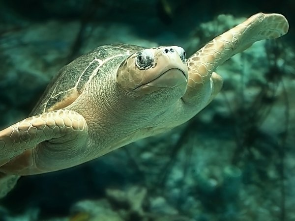
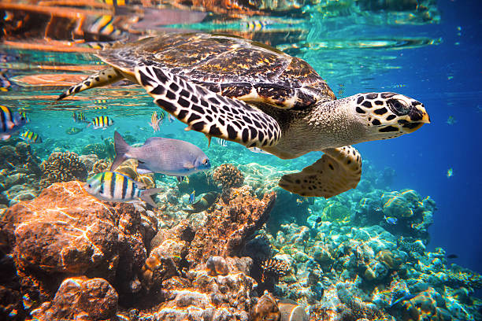

Turtle Categories
There are seven types of Sea Turtles living all around the world. Sri Lanka is fortunate to have five species of the seven sea turtle species that have been identified as dwelling along the picturesque island's coastline.

Olive Ridley
Olive Ridley sea turtle is "Lepidochelys olivacea", known for its synchronized nesting rituals and vulnerable status
Read more
Leatherback-turtle
Leatherback sea turtle, "Dermochelys coriacea," is the largest of all living turtles and showcases remarkable adaptations for deep-sea diving.
Read moreLoggerhead-turtle
Loggerhead sea turtle, aka "Caretta caretta," possesses a distinctive large head and strong jaws, making it an important marine species.
Read moreHawksbill sea turtle
Hawksbill sea turtle, aka "Eretmochelys imbricata," is known for its stunning shell patterns , serves a vital ecological role .
Read more
Green Sea Turtle
The Green sea turtle, aka "Chelonia mydas," is a marine creature known for its vibrant green coloration .
Read moreSea turtles, magnificent creatures of the ocean, are categorized into several species based on their unique characteristics and habitats. Let's explore the main categories of sea turtles that visit Sri Lanka :
1. OLIVE RIDLEY SEA TURTLE
The intriguing sea turtle species known as the Olive Ridley turtle (Lepidochelys olivacea) has some unique qualities. It is the smallest and most prevalent sea turtle species, and what sets it apart from other species is its distinctive olive-colored carapace. The Olive Ridley is well-known for its arribadas, massive nesting occasions in which tens of thousands of females simultaneously arrive on specific beaches to lay their eggs. These omnivorous turtles consume a variety of foods, such as fish, jellyfish, fish, mollusks, and crustaceans. Despite being numerous, Olive Ridleys are seriously threatened by pollution, habitat loss, and entrapment in fishing gear. The protection of these fascinating creatures and the preservation of the sensitive ecosystems in the oceans they live in depend on conservation initiatives. Olive Ridley's have been sighted just about everywhere along Sri Lanka's coast. A popular location to visit Olive Ridley's in Sri Lanka is the Trincomalee beach
2. LEATHER-BACK SEA TURTLES
The leatherback turtle is the biggest sea turtle and one of the biggest reptiles on earth. It may grow to a length of 4 to 8 feet (1.2 to 2.4 meters), weighs 500 to 2,000 pounds (225 to 900 kilograms).The typical adult is between 5 and 6 feet (1.5 and 1.8 meters) tall and weighs 600 to 800 pounds (270 to 360 kilograms). It has existed for more than 150 million years and is the oldest species of sea turtle. They prospered up until the final few decades, when interactions with humans caused significant damage, after the dinosaurs went extinct.
These giants lack a strong scale-covered carapace (shell), often known as scutes. Their flexible bone matrix is covered by smooth, leathery skin. One of the most migratory sea turtles includes the leatherback, which travels across both the Atlantic and Pacific Oceans. The sea turtle is considered vulnerable on a global scale. Marine pollution, accidental capture (especially in shrimp trawl nets and nearshore gill nets), and harvesting for skin and meat are also threats.
3. LOGGERHEAD SEA TURTLES
The Loggerhead turtle (Caretta caretta) is a magnificent sea turtle species known for its robust build and large head. These turtles are found in various oceanic regions, including the Atlantic, Indian, and Pacific Oceans. Loggerheads have a wide distribution and can tolerate different water temperatures, allowing them to inhabit both tropical and temperate waters. They are known for their powerful jaws, which enable them to crush hard-shelled prey such as crabs and mollusks. Loggerhead turtles are also skilled navigators, undertaking long-distance migrations and displaying strong homing instincts by returning to their natal beaches to nest. However, these impressive creatures face numerous threats, including habitat degradation, pollution, and accidental capture in fishing gear. Conserving Loggerhead turtles is essential to safeguard their populations and maintain the biodiversity and balance of marine ecosystems.
4. HAWKSBILL SEA TURTLE
The Hawksbill turtle (Eretmochelys imbricata) is a captivating and critically endangered sea turtle species with distinct characteristics. Its name comes from its unique and strikingly beautiful shell, which is composed of overlapping scales or plates. Hawksbill turtles have a worldwide distribution and can be found in tropical and subtropical waters, primarily in coral reef habitats. They have a specialized diet, mainly feeding on sponges, which helps maintain the health of coral reefs by controlling sponge populations. Hawksbill turtles are known for their exceptional maneuverability underwater, thanks to their flipper-like limbs. Sadly, these remarkable creatures face numerous threats, including habitat loss, illegal trade of their shells, and accidental capture in fishing gear. Protecting and conserving the Hawksbill turtle is crucial to preserve their species and the fragile ecosystems they inhabit.
5. GREEN SEA TURTLE
The Green turtle (Chelonia mydas) is a captivating and globally recognized sea turtle species. Named for the greenish color of its fat, rather than its shell, the Green turtle is one of the largest sea turtles found worldwide. It inhabits tropical and subtropical waters and is known for its herbivorous diet, predominantly feeding on seagrass and algae. Green turtles play a vital role in maintaining the health of seagrass beds and contribute to the overall balance of marine ecosystems. They are famous for their long-distance migrations, navigating vast oceanic distances between feeding and nesting grounds. Green turtles are also known for their nesting behavior, returning to the same beaches where they were born to lay their eggs. Despite their ecological significance, Green turtles face various threats, including habitat destruction, pollution, and illegal poaching. Conservation efforts are crucial to protect and preserve these magnificent creatures and the habitats they rely on for their survival.
| Name | Scientific Name | Weight | Length | Habitat | Status | Where can you see them in Sri-Lanka | |
|---|---|---|---|---|---|---|---|
| Olive Ridley |  | Lepidochelys olivacea | 75-110 pounds | 24-28 inches | Oceans | Vulnerable | Olive Ridley’s have been sighted just about everywhere along Sri Lanka’s coast. |
| Leather-Back | Dermochelys coriacea | 600-1500 pounds | 55-63 inches | Oceans | Vulnerable | Leatherbacks turtles are most likely to be seen around Bentota | |
| Loggerhead-turtle | Caretta caretta | 175-400 pounds | 33-48 inches | Oceans | Vulnerable | Loggerhead turtles are more rare to sight in Sri Lanka. Loggerheads have been spotted along Kosgoda and Rekawa. | |
| Hawksbill turtle |  | Eretmochelys imbricata | 90-150 pounds | 30-35 inches | Oceans | Critically Endangered | Hawksbill turtles are most likely to be seen around Bentota |
| Green Sea Turtle |  |
Chelonia mydas | 150-400 pounds | 31-47 inches | Oceans | Endangered | Green turtles nest all year round in Sri Lanka, with the highest abundance reported in Kosgoda (north of Galle) and Rekawa (near Tangalle) |
| Summary of the turtle population in Sri Lanka | |||||||